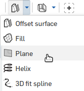

26. Create a plane representing the top of the engine
We need to make a stopper so the engine doesn't explode out of the top of the rocket.- Start a new plane with the plane tool 
- Select the bottom face of the rocket
- If needed, click the "Opposite direction" button
 to make the plane appear in the middle of the rocket
to make the plane appear in the middle of the rocket - Set the "Offset distance" to 2.9
- Click the green check


 to set the diameter to 0.6
to set the diameter to 0.6


 again to set the arc's radius to 0.1
again to set the arc's radius to 0.1